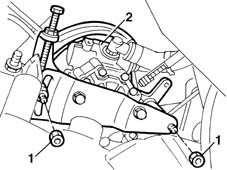
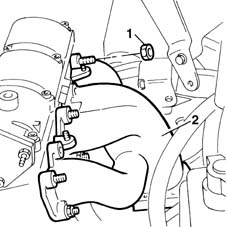
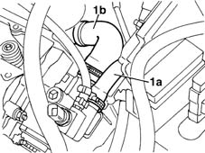
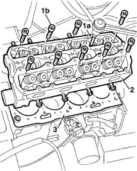
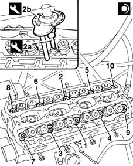

1016C10 cylinder head - r + r and replace gasket
- Path
- Procedures > 10 ENGINE UNIT > 1016 CYLINDER HEAD/S > 1016C cylinder head - remove + re-fit > 1016C10 cylinder head - r + r and replace gasket
- Kind
- repair procedure (removal / refitting; the operation number is the code)
- Applies to
- engines: 1.6 16v; all production periods
- Interactive page
- https://sloeber94.github.io/elrnDB-fMltpl/en/#/2891197
Applies to: engines: 1.6 16v; all production periods
 Removing
Removing
 Refitting
RefittingPlace the car on a ramp.
1088D10 lower sleeve for coolant outlet from radiator - r + r
1088D14 upper sleeve for coolant inlet to radiator - r + r
1048A10 AIR CLEANER FILTERING ELEMENT - REPLACE
1. Undo the fixing nuts.
2. Tilt the power steering pump to one side without disconnecting both pipes.

Applies to: engines: 1.6 16v; all production periods
1072B50 sleeves connecting air capacity box to inlet manifold is - r+r
1072B14 inlet manifold - r+r and replace seal with air conveyor/box removed
1032B10 toothed timing belt - r + r for timing adjustment or replacement
1032B40 toothed-driven pulley (one) - r + r with timing belt removed
- 1032D34 timing system guard assemblies - r + r
- 1056B51 cam angle sensor r + r
1072C44 exhaust manifold heat shield on bulkhead - r+r
1. Undo the nuts fixing the exhaust manifold to the cylinder head.
2. Release the exhaust manifold from the cylinder head.

Applies to: engines: 1.6 16v; all production periods
1. Disconnect pipe (1a) carrying coolant to the heater and pipe (1b) carrying coolant to the water pump from the thermostat.

Applies to: engines: 1.6 16v; all production periods
1016B22 lh cylinder head extension - r r with timing belt removed - replace gasket
1016B26 rh cylinder head extension -r r with timing belt removed -replace gasket
1. Use tool (1a) to unscrew bolts (1b) securing the cylinder head to the crankcase.
2. Remove the cylinder head together with the thermostat.
3. Recover the underlying gasket
 | Name | Country |
|---|---|---|
1a | Key | 1.852.157.000 |

Applies to: engines: 1.6 16v; all production periods
Refitting
RemovingClean the cylinder head and crankcase contact surfaces.
Position the cylinder head gasket with the wording "ALTO" [TOP] facing you.
In order for the polymerization process to take place it is necessary:
- to keep the gasket in its sealed plastic container
- not to take out of its container until ready to fit
- not to lubricate the gasket or contaminate with oil, and to ensure the crankcase and cylinder head surfaces are clean.
Position the cylinder head on the crankcase.
1. Tighten the cylinder head bolts, following the order shown in the figure below.
2. Use wrench (2a) with tool (2b) to tighten the cylinder head bolts to torque. Follow the tightening order described previously.
| Name | Country |
|---|---|---|
2a | Key | 1.852.157.000 |
| Name | Country |
|---|---|---|
2b | Protractor | 1.895.897.000 |
 | Fastening | Component | Ø | Value (daNm) |
|---|---|---|---|---|
- | Bolt | CYLINDER HEAD | M10 x 1.25 | 4 + 90° + 90° |

Applies to: engines: 1.6 16v; all production periods
Connect the pipe carrying coolant from the heater and the pipe carrying coolant to the water pump to the thermostat.
Fit the exhaust manifold to the cylinder head.
Tighten the nuts fixing the exhaust manifold to the cylinder head .
| Fastening | Component | Ø | Value (daNm) |
|---|---|---|---|---|
- | Bolt | EXHAUST MANIFOLD/S | M6 | 3 |
1072C44 exhaust manifold heat shield on bulkhead - r+r
- 1056B51 cam angle sensor r + r
- 1056B51 cam angle sensor r + r
- 1032D34 timing system guard assemblies - r + r
1032B40 toothed-driven pulley (one) - r + r with timing belt removed
1032B10 toothed timing belt - r + r for timing adjustment or replacement
1072B14 inlet manifold - r+r and replace seal with air conveyor/box removed
1072B50 sleeves connecting air capacity box to inlet manifold is - r+r
Fit the power steering pump.
Tighten the power steering nuts to torque.
| Fastening | Component | Ø | Value (daNm) |
|---|---|---|---|---|
- | Nut | POWER STEERING PUMP SUPPORT/BRACKET | M10 | 5 |
1088D10 lower sleeve for coolant outlet from radiator - r + r
1088D14 upper sleeve for coolant inlet to radiator - r + r
1048A10 AIR CLEANER FILTERING ELEMENT - REPLACE
Remove the vehicle from the ramp.
Topics linked from this page (10)
- 1016B22 lh cylinder head extension - r r with timing belt removed - replace gasket
- 1016B26 rh cylinder head extension -r r with timing belt removed -replace gasket
- 1032B10 toothed timing belt - r + r for timing adjustment or replacement
- 1032B40 toothed-driven pulley (one) - r + r with timing belt removed
- 1048A10 AIR CLEANER FILTERING ELEMENT - REPLACE
- 1072B14 inlet manifold - r+r and replace seal with air conveyor/box removed
- 1072B50 sleeves connecting air capacity box to inlet manifold is - r+r
- 1072C44 exhaust manifold heat shield on bulkhead - r+r
- 1088D10 lower sleeve for coolant outlet from radiator - r + r
- 1088D14 upper sleeve for coolant inlet to radiator - r + r